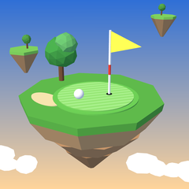

Golf & mini golf adventures
Golf you swing with one finger. Play 17 full-size courses, from tree-lined parkland to islands floating above the clouds and low-gravity links on the Moon, and 6 themed mini golf parks. Read every break with the slope grid, take on a Tour season, and play friends online.
Swipe straight down to take the club back (further down means more power), then swipe straight up through the line. Keep the swipe straight: drifting sideways pushes or pulls the ball. Settings › How to play has the full guide, and Settings › Swing difficulty makes the swing more forgiving (Casual) or more demanding (Pro).
On the green, the grid shows the slope: the beads flow downhill, and the mark on the power bar is the pace that stops the ball at the cup on flat ground. Swing past it uphill and short of it downhill.
Earn stars on holes (finish, beat par, complete the hole's challenge). Each course opens at a star total shown on its card.
Tap Play Online, create a room and share the room code (up to 4 players). Everyone needs the same version of Golf Realms. You can also play against the computer from the same screen.
Yes: on any course leaderboard tap Change, or edit it on the Play Online screen. Names that contain slurs or swearing aren't accepted.
Open their round on the leaderboard and tap Report. You won't see their rounds again, and rounds that several players report are taken down for review.
Settings › Online › Delete my online scores. Your progress on your phone isn't affected.
Tracking: iPhone Settings › Privacy & Security › Tracking. In the EEA, UK and Switzerland, Golf Realms also has Settings › Privacy choices.
Progress is saved on your phone and comes back with an iCloud or computer backup of the device. Deleting the app deletes your progress.
Need help with Golf Realms? Email guntergamesdev@gmail.com and include your iPhone model and iOS version. We usually reply within a couple of days.
Email support